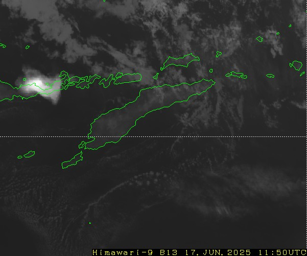

Meteorologi
Halaman ini berisi artikel, penelitian, dan beberapa hal terkait meteorologi, seperti hasil simulasi atau pemodelan parameter atmosfer menggunakan openGrADS, jurnal awan dan lainnya.

Citra Sebaran Abu Vulkanik Gunung Lewotobi Lakilaki
Gunung Lewotobi Lakilaki meletus pada 17 Juni 2025, tinggi kolom abu mencapai > 10.000 meter...
Read More